PyPSA Tutorial (March 11, 2026)#
This tutorial connects the optimisation problems we introduced in Lectures 3 and 4 to PyPSA — Python for Power System Analysis. This tutorial covers some basic concepts of PyPSA, and accompanies the more hands-on introduction in the introduction to PyPSA notebook.
1. Dispatch + Capacity Expansion: Revisiting lecture 3#
The core optimisation problem (single node, joint dispatch and capacity expansion) is
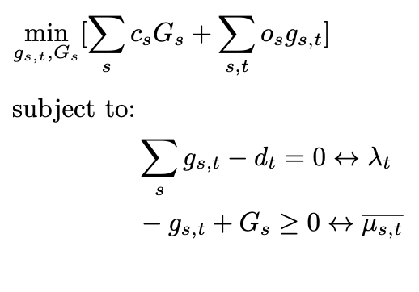
(and further constraints: storage consistency, line limits, etc.)
Each part maps directly to a PyPSA concept:
Math |
Meaning |
PyPSA |
|---|---|---|
\(t\) |
Each time step (hour) |
Snapshot |
one node |
System node / representation |
Bus |
\(d_t\) |
Electricity demand |
Load |
\(g_{s,t}\) |
Generator dispatch |
Generator (result: |
Remaining important ingredients:
Math |
Meaning |
PyPSA |
|---|---|---|
\(G_s\) |
Installed capacity |
|
\(g_{s,t}\) |
Generation limited by the CF |
|
\(c_s\) |
Marginal cost |
|
\(C_s\) |
Investment cost |
|
Energy balance |
Demand = Supply |
Built into Bus automatically |
Generation limits |
Upper bound on dispatch |
Built into Generator automatically |
2. Single-Node Drawing → PyPSA Components#
Consider a single-node representation of Denmark (DK) with three components:
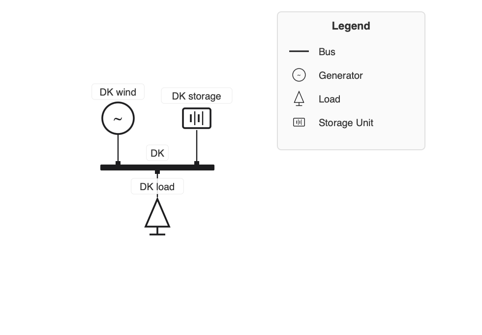
Each physical element maps to a PyPSA component:
ESM concept |
PyPSA component |
Notes |
|---|---|---|
Variable generator (wind/solar) |
|
|
Storage |
|
Use |
Demand (load) |
|
|
The bus (Bus) is the node itself — it enforces the energy balance for everything attached to it.
We want to construct a single-node representation of Denmark in PyPSA, with a wind generator, a battery, and a load. Usually we would start with an empty network and add components one by one, but for “simple” networks there is a nice visual tool that can help us in this:
https://nimabahrami.github.io/pypsa-drawer/
We need to create the following components:
carriers for AC (for load), wind, and storage
a bus for DK
a load for DK
a generator for DK (wind)
a storage unit for DK (battery)
We will do this for one day (24 hours), and we will use the real wind capacity factors for Denmark on 2015-01-01 (24 hours) that we introduced in Lecture 3.
import pypsa
import pandas as pd
import matplotlib.pyplot as plt
import numpy as np
# --- Real wind capacity factors: Denmark, 2015-01-03 (24 hours) ---
wind = pd.read_csv("Problems/data/onshore_wind.csv", sep=";", index_col=0, parse_dates=True)
wind = wind.tz_convert(None)
wind_dnk = wind.loc["2015-01-03", "DNK"]
print("DNK wind capacity factors on 2015-01-03:")
wind_dnk.plot()
Set parameter Username
Set parameter LicenseID to value 2767832
Academic license - for non-commercial use only - expires 2027-01-20
DNK wind capacity factors on 2015-01-03:
<Axes: xlabel='utc_time'>
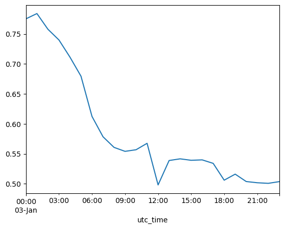
Let’s use the PyPSA drawer to create the network above visually:
https://nimabahrami.github.io/pypsa-drawer/
# Create network
n = pypsa.Network()
n.set_snapshots(range(24)) # Adjust as needed
# --- Carriers ---
n.add(
"Carrier",
"Wind",
co2_emissions=0,
nice_name="Onshore wind",
color="0000FF",
)
n.add(
"Carrier",
"AC",
co2_emissions=0,
)
n.add(
"Carrier",
"battery",
co2_emissions=0,
)
# --- Buses ---
n.add(
"Bus",
"DK",
carrier="AC",
)
# --- Generators ---
n.add(
"Generator",
"DK wind",
bus="DK",
carrier="Wind",
p_nom=0,
marginal_cost=0,
capital_cost=101644,
)
# --- Loads ---
n.add(
"Load",
"DK load",
bus="DK",
carrier="AC",
p_set=1000,
)
# --- Storage Units ---
n.add(
"StorageUnit",
"DK storage",
bus="DK",
carrier="battery",
p_nom=0,
max_hours=6,
)
# --- Solve ---
# n.optimize(solver_name="highs") # Uncomment to solve
# n.statistics() # View results
We can inspect the network to see what we added:
n
PyPSA Network 'Unnamed Network'
-------------------------------
Components:
- Bus: 1
- Carrier: 3
- Generator: 1
- Load: 1
- StorageUnit: 1
Snapshots: 24
We can check which generators we have, their names, buses, carriers, current capacities (p_nom), capacity factors (p_max_pu), capital and marginal costs (and other parameters):
n.generators[["bus", "carrier", "p_nom", "p_max_pu", "capital_cost", "marginal_cost"]].T
| name | DK wind |
|---|---|
| bus | DK |
| carrier | Wind |
| p_nom | 0.0 |
| p_max_pu | 1.0 |
| capital_cost | 101644.0 |
| marginal_cost | 0.0 |
At this point, we want to add the capacity factors from before, so we will actually regenerate the network similarly, but including snapshots and time series data. We will also reuse the costs we have used in the exercises for both battery storage and onshore wind. We assume a fixed energy to power ratio of 6 hours for the battery, so we can use a StorageUnit instead of a Store + Link combination.
# Create network
n = pypsa.Network()
# Add snapshot (time steps) to the network:
n.set_snapshots(wind_dnk.index) # NOTE THE DIFFERENCE
# --- Carriers ---
n.add(
"Carrier",
"Wind",
co2_emissions=0, # not needed at this point, but we will introduce CO2 limits later in Lecture 9
nice_name="Onshore wind", # for plotting purposes
)
n.add(
"Carrier",
"AC",
)
n.add(
"Carrier",
"battery",
)
# --- Buses ---
n.add(
"Bus",
"DK",
carrier="AC",
)
# --- Generators ---
n.add(
"Generator",
"DK wind",
bus="DK",
carrier="Wind",
p_nom=0,
marginal_cost=0,
capital_cost=101644,
p_max_pu=wind_dnk.values, # NOTE THE DIFFERENCE, we add the capacity factors
p_nom_extendable=True, # Allow capacity expansion
)
# --- Loads ---
n.add(
"Load",
"DK load",
bus="DK",
p_set=pd.Series(1000, index=wind_dnk.index), # NOTE THE DIFFERENCE, we add a time series of demand, here it is fixed
)
# --- Storage Units ---
n.add(
"StorageUnit",
"DK storage",
bus="DK",
carrier="battery",
p_nom=0,
max_hours=6, # fixed ratio of energy capacity to power capacity: 6 hours of storage at full power
capital_cost=102042,
marginal_cost=0,
p_nom_extendable=True, # Allow capacity expansion
)
n.generators[["bus", "carrier", "p_nom", "p_max_pu", "capital_cost", "marginal_cost"]].T
| name | DK wind |
|---|---|
| bus | DK |
| carrier | Wind |
| p_nom | 0.0 |
| p_max_pu | 1.0 |
| capital_cost | 101644.0 |
| marginal_cost | 0.0 |
We can now check whether the capacity factors were added correctly:
print(n.generators_t.p_max_pu)
n.generators_t.p_max_pu.plot()
name DK wind
snapshot
2015-01-03 00:00:00 0.775336
2015-01-03 01:00:00 0.784170
2015-01-03 02:00:00 0.757938
2015-01-03 03:00:00 0.740065
2015-01-03 04:00:00 0.711429
2015-01-03 05:00:00 0.679621
2015-01-03 06:00:00 0.612471
2015-01-03 07:00:00 0.578539
2015-01-03 08:00:00 0.560825
2015-01-03 09:00:00 0.554192
2015-01-03 10:00:00 0.556877
2015-01-03 11:00:00 0.567621
2015-01-03 12:00:00 0.498158
2015-01-03 13:00:00 0.538912
2015-01-03 14:00:00 0.541701
2015-01-03 15:00:00 0.539283
2015-01-03 16:00:00 0.539980
2015-01-03 17:00:00 0.534161
2015-01-03 18:00:00 0.506076
2015-01-03 19:00:00 0.516142
2015-01-03 20:00:00 0.503830
2015-01-03 21:00:00 0.501798
2015-01-03 22:00:00 0.500812
2015-01-03 23:00:00 0.503667
<Axes: xlabel='snapshot'>
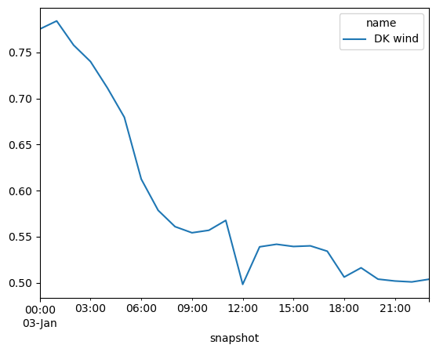
Same for the load:
print(n.loads_t.p_set)
name DK load
snapshot
2015-01-03 00:00:00 1000.0
2015-01-03 01:00:00 1000.0
2015-01-03 02:00:00 1000.0
2015-01-03 03:00:00 1000.0
2015-01-03 04:00:00 1000.0
2015-01-03 05:00:00 1000.0
2015-01-03 06:00:00 1000.0
2015-01-03 07:00:00 1000.0
2015-01-03 08:00:00 1000.0
2015-01-03 09:00:00 1000.0
2015-01-03 10:00:00 1000.0
2015-01-03 11:00:00 1000.0
2015-01-03 12:00:00 1000.0
2015-01-03 13:00:00 1000.0
2015-01-03 14:00:00 1000.0
2015-01-03 15:00:00 1000.0
2015-01-03 16:00:00 1000.0
2015-01-03 17:00:00 1000.0
2015-01-03 18:00:00 1000.0
2015-01-03 19:00:00 1000.0
2015-01-03 20:00:00 1000.0
2015-01-03 21:00:00 1000.0
2015-01-03 22:00:00 1000.0
2015-01-03 23:00:00 1000.0
We now optimise the network to find the optimal dispatch and capacity expansion with n.optimize():
n.optimize(solver_name="gurobi") # Solve
INFO:linopy.model: Solve problem using Gurobi solver
INFO:linopy.io: Writing time: 0.04s
Set parameter Username
INFO:gurobipy:Set parameter Username
Set parameter LicenseID to value 2767832
INFO:gurobipy:Set parameter LicenseID to value 2767832
Academic license - for non-commercial use only - expires 2027-01-20
INFO:gurobipy:Academic license - for non-commercial use only - expires 2027-01-20
Read LP format model from file /private/var/folders/zg/by4_k0616s98pw41wld9475c0000gp/T/linopy-problem-s_e3bvnc.lp
INFO:gurobipy:Read LP format model from file /private/var/folders/zg/by4_k0616s98pw41wld9475c0000gp/T/linopy-problem-s_e3bvnc.lp
Reading time = 0.00 seconds
INFO:gurobipy:Reading time = 0.00 seconds
obj: 242 rows, 98 columns, 457 nonzeros
INFO:gurobipy:obj: 242 rows, 98 columns, 457 nonzeros
Gurobi Optimizer version 13.0.0 build v13.0.0rc1 (mac64[arm] - Darwin 25.2.0 25C56)
INFO:gurobipy:Gurobi Optimizer version 13.0.0 build v13.0.0rc1 (mac64[arm] - Darwin 25.2.0 25C56)
INFO:gurobipy:
CPU model: Apple M3
INFO:gurobipy:CPU model: Apple M3
Thread count: 8 physical cores, 8 logical processors, using up to 8 threads
INFO:gurobipy:Thread count: 8 physical cores, 8 logical processors, using up to 8 threads
INFO:gurobipy:
Optimize a model with 242 rows, 98 columns and 457 nonzeros (Min)
INFO:gurobipy:Optimize a model with 242 rows, 98 columns and 457 nonzeros (Min)
Model fingerprint: 0x689c9207
INFO:gurobipy:Model fingerprint: 0x689c9207
Model has 2 linear objective coefficients
INFO:gurobipy:Model has 2 linear objective coefficients
Coefficient statistics:
INFO:gurobipy:Coefficient statistics:
Matrix range [5e-01, 6e+00]
INFO:gurobipy: Matrix range [5e-01, 6e+00]
Objective range [1e+05, 1e+05]
INFO:gurobipy: Objective range [1e+05, 1e+05]
Bounds range [0e+00, 0e+00]
INFO:gurobipy: Bounds range [0e+00, 0e+00]
RHS range [1e+03, 1e+03]
INFO:gurobipy: RHS range [1e+03, 1e+03]
Presolve removed 101 rows and 2 columns
INFO:gurobipy:Presolve removed 101 rows and 2 columns
Presolve time: 0.00s
INFO:gurobipy:Presolve time: 0.00s
Presolved: 141 rows, 96 columns, 353 nonzeros
INFO:gurobipy:Presolved: 141 rows, 96 columns, 353 nonzeros
INFO:gurobipy:
Iteration Objective Primal Inf. Dual Inf. Time
INFO:gurobipy:Iteration Objective Primal Inf. Dual Inf. Time
0 1.3096551e+08 1.728171e+03 0.000000e+00 0s
INFO:gurobipy: 0 1.3096551e+08 1.728171e+03 0.000000e+00 0s
49 1.9626514e+08 0.000000e+00 0.000000e+00 0s
INFO:gurobipy: 49 1.9626514e+08 0.000000e+00 0.000000e+00 0s
INFO:gurobipy:
Solved in 49 iterations and 0.00 seconds (0.00 work units)
INFO:gurobipy:Solved in 49 iterations and 0.00 seconds (0.00 work units)
Optimal objective 1.962651445e+08
INFO:gurobipy:Optimal objective 1.962651445e+08
INFO:linopy.constants: Optimization successful:
Status: ok
Termination condition: optimal
Solution: 98 primals, 242 duals
Objective: 1.96e+08
Solver model: available
Solver message: 2
INFO:pypsa.optimization.optimize:The shadow-prices of the constraints Generator-ext-p-lower, Generator-ext-p-upper, StorageUnit-ext-p_dispatch-lower, StorageUnit-ext-p_dispatch-upper, StorageUnit-ext-p_store-lower, StorageUnit-ext-p_store-upper, StorageUnit-ext-state_of_charge-lower, StorageUnit-ext-state_of_charge-upper, StorageUnit-energy_balance were not assigned to the network.
('ok', 'optimal')
Note that it outputs the optimal objective (total system costs), but it also saved shadow prices (dual variables / KKT or Lagrange multipliers). What is their meaning? Which one of them corresponds to the electricity price?
Furthermore we have outputs such like termination condition: optimal or ('ok', 'optimal'). This signifies that the optimisation problem was solve to optimality (and therefore also was feasible).
Let’s plot the dispatch and behaviour of storage, generation, and load:
fig, ax = plt.subplots(figsize=(10, 3))
# In order to create a stackplot we need to separate the positive and negative parts, using the clip method.
bat_dis = n.storage_units_t.p.clip(lower=0) # positive: discharge
bat_ch = n.storage_units_t.p.clip(upper=0) # negative: charging
# Note that p > 0 in a bus means injection into the bus (i.e. generation or in this case discharge from the battery into the bus).
# Stack wind + battery discharge together above 0
supply = pd.concat([
bat_dis.rename(columns={"DK storage": "Battery discharge"}),
n.generators_t.p.rename(columns={"DK wind": "Wind"}),
], axis=1)
supply.plot.area(ax=ax, linewidth=0, stacked=True,
color=["#2ca02c", "#1f77b4"])
# Battery charging below 0 (separate call is fine here — it naturally starts from 0 and goes negative)
bat_ch.rename(columns={"DK storage": "Battery charge"}).plot.area(
ax=ax, linewidth=0, stacked=True, color=["#ff7f0e"])
# Demand (constant)
n.loads_t.p_set.sum(axis=1).plot(ax=ax, color="black", linestyle="--", label="Demand")
ax.axhline(0, color="black", linewidth=0.5)
ax.set_ylabel("MW")
ax.set_ylim(-200, 1200)
ax.legend(frameon=False, bbox_to_anchor=(1.05, 1))
plt.tight_layout()
/opt/homebrew/Caskroom/miniforge/base/envs/integrated-energy-grids/lib/python3.13/site-packages/pandas/plotting/_matplotlib/core.py:1800: UserWarning:
Attempting to set identical low and high ylims makes transformation singular; automatically expanding.
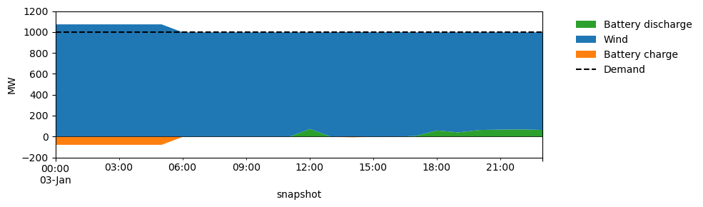
3. Two Nodes: DK and DE#
Following up on the last lectures where we introduced networks, we so far used networkX to represent the topology. We can keep using PyPSA which has a network representation that utilises networkX under the hood. The convenient thing is that much of the physical properties (power flow, later other flows) are automatically taken care of.
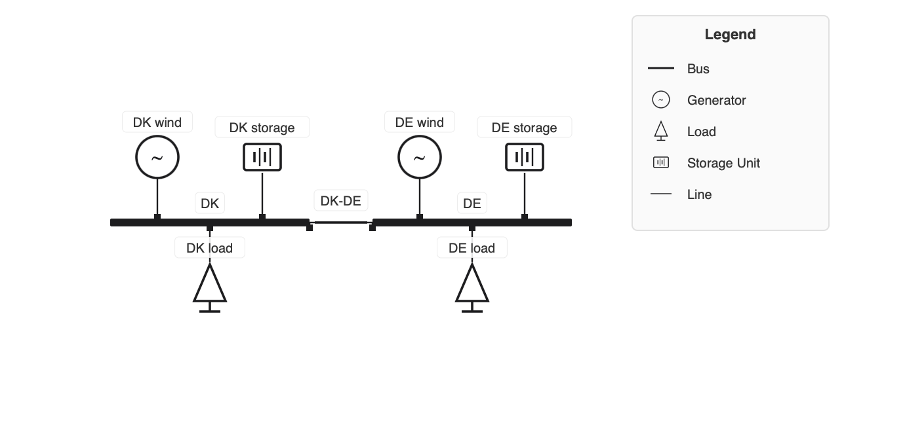
Each physical element maps to a PyPSA component:
D ESM concept |
PyPSA component |
Notes |
|---|---|---|
|
|
|
Storage |
|
Use |
Demand (load) |
|
|
AC transmission with KVL |
|
Meshed grids, requires reactance |
In general, we can decide whether to use linearised or optimal power flow in PyPSA (see our discussions in the lecture).
In this specific example where we have one line connecting two nodes, we can actually just use net-transfer capacities (NTC).
The energy balance now holds at each bus separately:
where \(f_{\ell,t}\) is the net power injected at bus \(i\) from the line (positive = import, negative = export), subject to
PyPSA writes both constraints automatically from the network topology. You only need to specify which bus each component is attached to.
Let’s add the second bus for Germany, with a higher load, battery storage and a generator (wind):
We update the wind time series to include both DK and DE:
# --- Real wind capacity factors: Denmark and Germany, 2015-01-03 (24 hours) ---
wind = pd.read_csv("Problems/data/onshore_wind.csv", sep=";", index_col=0, parse_dates=True)
wind = wind.tz_convert(None)
wind_dnk_deu = wind.loc["2015-01-03", ["DNK", "DEU"]]
print("DNK, DEU wind capacity factors on 2015-01-03:")
wind_dnk_deu.plot()
DNK, DEU wind capacity factors on 2015-01-03:
<Axes: xlabel='utc_time'>
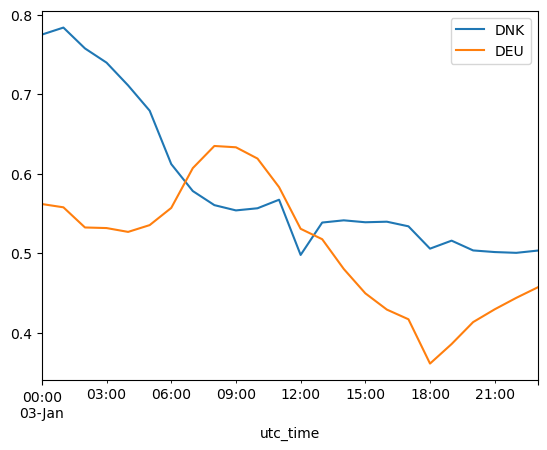
# Create network
n = pypsa.Network()
n.set_snapshots(wind_dnk_deu.index) # Adjust as needed
# --- Carriers ---
n.add(
"Carrier",
"Wind",
nice_name="Onshore wind",
color = "blue",
)
n.add(
"Carrier",
"AC",
color="black",
)
n.add(
"Carrier",
"battery",
color="orange",
)
# --- Buses ---
n.add(
"Bus",
"DK",
carrier="AC",
)
n.add(
"Bus",
"DE",
carrier="AC",
)
# --- Generators ---
n.add(
"Generator",
"DK wind",
bus="DK",
carrier="Wind",
p_nom=0,
p_nom_extendable=True,
p_max_pu=wind_dnk_deu["DNK"].values,
marginal_cost=0,
capital_cost=101644,
)
n.add(
"Generator",
"DE wind",
bus="DE",
carrier="Wind",
p_nom=0,
p_nom_extendable=True,
p_max_pu=wind_dnk_deu["DEU"].values,
marginal_cost=0,
capital_cost=101644,
)
# --- Loads ---
n.add(
"Load",
"DK load",
bus="DK",
p_set=pd.Series(1000, index=wind_dnk_deu.index), # NOTE THE DIFFERENCE
)
n.add(
"Load",
"DE load",
bus="DE",
p_set=pd.Series(5000, index=wind_dnk_deu.index), # NOTE THE DIFFERENCE
)
# --- Storage Units ---
n.add(
"StorageUnit",
"DK storage",
bus="DK",
carrier="battery",
p_nom=0,
p_nom_extendable=True,
max_hours=6,
capital_cost=102042,
marginal_cost=0,
)
n.add(
"StorageUnit",
"DE storage",
bus="DE",
carrier="battery",
p_nom=0,
max_hours=6,
capital_cost=102042,
marginal_cost=0,
p_nom_extendable=True, # Allow capacity expansion
)
# --- Lines ---
n.add(
"Line",
"DK-DE",
bus0="DK",
bus1="DE",
s_nom=1500, # MW: allow some fixed capacity. Do not allow for capacity expansion at this point.
)
n.optimize(solver_name="gurobi")
WARNING:pypsa.consistency:The following lines have zero x, which could break the linear load flow:
Index(['DK-DE'], dtype='object', name='name')
WARNING:pypsa.consistency:The following lines have zero r, which could break the linear load flow:
Index(['DK-DE'], dtype='object', name='name')
INFO:linopy.model: Solve problem using Gurobi solver
INFO:linopy.io: Writing time: 0.04s
Set parameter Username
INFO:gurobipy:Set parameter Username
Set parameter LicenseID to value 2767832
INFO:gurobipy:Set parameter LicenseID to value 2767832
Academic license - for non-commercial use only - expires 2027-01-20
INFO:gurobipy:Academic license - for non-commercial use only - expires 2027-01-20
Read LP format model from file /private/var/folders/zg/by4_k0616s98pw41wld9475c0000gp/T/linopy-problem-pt8g_r4a.lp
INFO:gurobipy:Read LP format model from file /private/var/folders/zg/by4_k0616s98pw41wld9475c0000gp/T/linopy-problem-pt8g_r4a.lp
Reading time = 0.00 seconds
INFO:gurobipy:Reading time = 0.00 seconds
obj: 532 rows, 220 columns, 1010 nonzeros
INFO:gurobipy:obj: 532 rows, 220 columns, 1010 nonzeros
Gurobi Optimizer version 13.0.0 build v13.0.0rc1 (mac64[arm] - Darwin 25.2.0 25C56)
INFO:gurobipy:Gurobi Optimizer version 13.0.0 build v13.0.0rc1 (mac64[arm] - Darwin 25.2.0 25C56)
INFO:gurobipy:
CPU model: Apple M3
INFO:gurobipy:CPU model: Apple M3
Thread count: 8 physical cores, 8 logical processors, using up to 8 threads
INFO:gurobipy:Thread count: 8 physical cores, 8 logical processors, using up to 8 threads
INFO:gurobipy:
Optimize a model with 532 rows, 220 columns and 1010 nonzeros (Min)
INFO:gurobipy:Optimize a model with 532 rows, 220 columns and 1010 nonzeros (Min)
Model fingerprint: 0x5c25bca3
INFO:gurobipy:Model fingerprint: 0x5c25bca3
Model has 4 linear objective coefficients
INFO:gurobipy:Model has 4 linear objective coefficients
Coefficient statistics:
INFO:gurobipy:Coefficient statistics:
Matrix range [4e-01, 6e+00]
INFO:gurobipy: Matrix range [4e-01, 6e+00]
Objective range [1e+05, 1e+05]
INFO:gurobipy: Objective range [1e+05, 1e+05]
Bounds range [0e+00, 0e+00]
INFO:gurobipy: Bounds range [0e+00, 0e+00]
RHS range [1e+03, 5e+03]
INFO:gurobipy: RHS range [1e+03, 5e+03]
Presolve removed 249 rows and 5 columns
INFO:gurobipy:Presolve removed 249 rows and 5 columns
Presolve time: 0.00s
INFO:gurobipy:Presolve time: 0.00s
Presolved: 283 rows, 215 columns, 752 nonzeros
INFO:gurobipy:Presolved: 283 rows, 215 columns, 752 nonzeros
INFO:gurobipy:
Iteration Objective Primal Inf. Dual Inf. Time
INFO:gurobipy:Iteration Objective Primal Inf. Dual Inf. Time
0 6.3215053e+08 1.756294e+04 0.000000e+00 0s
INFO:gurobipy: 0 6.3215053e+08 1.756294e+04 0.000000e+00 0s
187 1.2839720e+09 0.000000e+00 0.000000e+00 0s
INFO:gurobipy: 187 1.2839720e+09 0.000000e+00 0.000000e+00 0s
INFO:gurobipy:
Solved in 187 iterations and 0.01 seconds (0.00 work units)
INFO:gurobipy:Solved in 187 iterations and 0.01 seconds (0.00 work units)
Optimal objective 1.283971973e+09
INFO:gurobipy:Optimal objective 1.283971973e+09
INFO:linopy.constants: Optimization successful:
Status: ok
Termination condition: optimal
Solution: 220 primals, 532 duals
Objective: 1.28e+09
Solver model: available
Solver message: 2
INFO:pypsa.optimization.optimize:The shadow-prices of the constraints Generator-ext-p-lower, Generator-ext-p-upper, Line-fix-s-lower, Line-fix-s-upper, StorageUnit-ext-p_dispatch-lower, StorageUnit-ext-p_dispatch-upper, StorageUnit-ext-p_store-lower, StorageUnit-ext-p_store-upper, StorageUnit-ext-state_of_charge-lower, StorageUnit-ext-state_of_charge-upper, StorageUnit-energy_balance were not assigned to the network.
('ok', 'optimal')
4. Under the Hood: PyPSA Architecture and Model Internals#
We just called n.optimize(solver_name="gurobi") — it skips a lot of steps which took us some time before and different packages.
The big picture: how PyPSA connects several steps into one mathematical model and package#
Inputs (pandas) constraints
- weather / capacity factors by default
- costs, tech parameters ──────► Mathematical model ──────► Optimisation ──────► Optimal ──────► Analysis ──────► Plotting
of an energy network problem system (pandas) (matplotlib)
Inputs (networkX topology) Gurobi / HiGHS
- buses, links, lines ──────► via linopy
(n.model)
│
n.pf() n.lpf()
pandascarries all time-series and static data (capacity factors, demand, costs).networkX-style topology is encoded inn.buses,n.lines,n.links, etc.PyPSA translates your network description into a linopy
Modelobject (n.model).The solver (Gurobi or HiGHS) solves the LP/MILP and results land back in pandas DataFrames.
In the capacity expansion and dispatch optimisation, we use
n.lpf()(linearised DC), as the PyPSA optimisation problem is linear. Only after dispatch we can also usen.pf()(full AC) for power flow analysis .
Inspecting the linopy model#
After n.optimize(), the linopy Model is stored at n.model. We can inspect its variables, constraints and objective without re-solving:
m = n.model # linopy.Model — already built by n.optimize()
print(type(m))
print(m)
<class 'linopy.model.Model'>
Linopy LP model
===============
Variables:
----------
* Generator-p_nom (name)
* StorageUnit-p_nom (name)
* Generator-p (snapshot, name)
* Line-s (snapshot, name)
* StorageUnit-p_dispatch (snapshot, name)
* StorageUnit-p_store (snapshot, name)
* StorageUnit-state_of_charge (snapshot, name)
Constraints:
------------
* Generator-ext-p_nom-lower (name)
* StorageUnit-ext-p_nom-lower (name)
* Generator-ext-p-lower (snapshot, name)
* Generator-ext-p-upper (snapshot, name)
* Line-fix-s-lower (snapshot, name)
* Line-fix-s-upper (snapshot, name)
* StorageUnit-ext-p_dispatch-lower (snapshot, name)
* StorageUnit-ext-p_dispatch-upper (snapshot, name)
* StorageUnit-ext-p_store-lower (snapshot, name)
* StorageUnit-ext-p_store-upper (snapshot, name)
* StorageUnit-ext-state_of_charge-lower (snapshot, name)
* StorageUnit-ext-state_of_charge-upper (snapshot, name)
* Bus-nodal_balance (name, snapshot)
* StorageUnit-energy_balance (snapshot, name)
Status:
-------
ok
# All decision variables
m.variables
linopy.model.Variables
----------------------
* Generator-p_nom (name)
* StorageUnit-p_nom (name)
* Generator-p (snapshot, name)
* Line-s (snapshot, name)
* StorageUnit-p_dispatch (snapshot, name)
* StorageUnit-p_store (snapshot, name)
* StorageUnit-state_of_charge (snapshot, name)
# Generator dispatch variable: shape = (snapshots × generators)
m['Generator-p']
Variable (snapshot: 24, name: 2)
--------------------------------
[2015-01-03 00:00:00, DK wind]: Generator-p[2015-01-03 00:00:00, DK wind] ∈ [-inf, inf]
[2015-01-03 00:00:00, DE wind]: Generator-p[2015-01-03 00:00:00, DE wind] ∈ [-inf, inf]
[2015-01-03 01:00:00, DK wind]: Generator-p[2015-01-03 01:00:00, DK wind] ∈ [-inf, inf]
[2015-01-03 01:00:00, DE wind]: Generator-p[2015-01-03 01:00:00, DE wind] ∈ [-inf, inf]
[2015-01-03 02:00:00, DK wind]: Generator-p[2015-01-03 02:00:00, DK wind] ∈ [-inf, inf]
[2015-01-03 02:00:00, DE wind]: Generator-p[2015-01-03 02:00:00, DE wind] ∈ [-inf, inf]
[2015-01-03 03:00:00, DK wind]: Generator-p[2015-01-03 03:00:00, DK wind] ∈ [-inf, inf]
...
[2015-01-03 20:00:00, DE wind]: Generator-p[2015-01-03 20:00:00, DE wind] ∈ [-inf, inf]
[2015-01-03 21:00:00, DK wind]: Generator-p[2015-01-03 21:00:00, DK wind] ∈ [-inf, inf]
[2015-01-03 21:00:00, DE wind]: Generator-p[2015-01-03 21:00:00, DE wind] ∈ [-inf, inf]
[2015-01-03 22:00:00, DK wind]: Generator-p[2015-01-03 22:00:00, DK wind] ∈ [-inf, inf]
[2015-01-03 22:00:00, DE wind]: Generator-p[2015-01-03 22:00:00, DE wind] ∈ [-inf, inf]
[2015-01-03 23:00:00, DK wind]: Generator-p[2015-01-03 23:00:00, DK wind] ∈ [-inf, inf]
[2015-01-03 23:00:00, DE wind]: Generator-p[2015-01-03 23:00:00, DE wind] ∈ [-inf, inf]
# All automatically generated constraints
m.constraints
linopy.model.Constraints
------------------------
* Generator-ext-p_nom-lower (name)
* StorageUnit-ext-p_nom-lower (name)
* Generator-ext-p-lower (snapshot, name)
* Generator-ext-p-upper (snapshot, name)
* Line-fix-s-lower (snapshot, name)
* Line-fix-s-upper (snapshot, name)
* StorageUnit-ext-p_dispatch-lower (snapshot, name)
* StorageUnit-ext-p_dispatch-upper (snapshot, name)
* StorageUnit-ext-p_store-lower (snapshot, name)
* StorageUnit-ext-p_store-upper (snapshot, name)
* StorageUnit-ext-state_of_charge-lower (snapshot, name)
* StorageUnit-ext-state_of_charge-upper (snapshot, name)
* Bus-nodal_balance (name, snapshot)
* StorageUnit-energy_balance (snapshot, name)
# Nodal energy balance — one equation per bus per snapshot
m.constraints['Bus-nodal_balance']
Constraint `Bus-nodal_balance` [name: 2, snapshot: 24]:
-------------------------------------------------------
[DK, 2015-01-03 00:00:00]: +1 Generator-p[2015-01-03 00:00:00, DK wind] + 1 StorageUnit-p_dispatch[2015-01-03 00:00:00, DK storage] - 1 StorageUnit-p_store[2015-01-03 00:00:00, DK storage] - 1 Line-s[2015-01-03 00:00:00, DK-DE] = 1000.0
[DK, 2015-01-03 01:00:00]: +1 Generator-p[2015-01-03 01:00:00, DK wind] + 1 StorageUnit-p_dispatch[2015-01-03 01:00:00, DK storage] - 1 StorageUnit-p_store[2015-01-03 01:00:00, DK storage] - 1 Line-s[2015-01-03 01:00:00, DK-DE] = 1000.0
[DK, 2015-01-03 02:00:00]: +1 Generator-p[2015-01-03 02:00:00, DK wind] + 1 StorageUnit-p_dispatch[2015-01-03 02:00:00, DK storage] - 1 StorageUnit-p_store[2015-01-03 02:00:00, DK storage] - 1 Line-s[2015-01-03 02:00:00, DK-DE] = 1000.0
[DK, 2015-01-03 03:00:00]: +1 Generator-p[2015-01-03 03:00:00, DK wind] + 1 StorageUnit-p_dispatch[2015-01-03 03:00:00, DK storage] - 1 StorageUnit-p_store[2015-01-03 03:00:00, DK storage] - 1 Line-s[2015-01-03 03:00:00, DK-DE] = 1000.0
[DK, 2015-01-03 04:00:00]: +1 Generator-p[2015-01-03 04:00:00, DK wind] + 1 StorageUnit-p_dispatch[2015-01-03 04:00:00, DK storage] - 1 StorageUnit-p_store[2015-01-03 04:00:00, DK storage] - 1 Line-s[2015-01-03 04:00:00, DK-DE] = 1000.0
[DK, 2015-01-03 05:00:00]: +1 Generator-p[2015-01-03 05:00:00, DK wind] + 1 StorageUnit-p_dispatch[2015-01-03 05:00:00, DK storage] - 1 StorageUnit-p_store[2015-01-03 05:00:00, DK storage] - 1 Line-s[2015-01-03 05:00:00, DK-DE] = 1000.0
[DK, 2015-01-03 06:00:00]: +1 Generator-p[2015-01-03 06:00:00, DK wind] + 1 StorageUnit-p_dispatch[2015-01-03 06:00:00, DK storage] - 1 StorageUnit-p_store[2015-01-03 06:00:00, DK storage] - 1 Line-s[2015-01-03 06:00:00, DK-DE] = 1000.0
...
[DE, 2015-01-03 17:00:00]: +1 Generator-p[2015-01-03 17:00:00, DE wind] + 1 StorageUnit-p_dispatch[2015-01-03 17:00:00, DE storage] - 1 StorageUnit-p_store[2015-01-03 17:00:00, DE storage] + 1 Line-s[2015-01-03 17:00:00, DK-DE] = 5000.0
[DE, 2015-01-03 18:00:00]: +1 Generator-p[2015-01-03 18:00:00, DE wind] + 1 StorageUnit-p_dispatch[2015-01-03 18:00:00, DE storage] - 1 StorageUnit-p_store[2015-01-03 18:00:00, DE storage] + 1 Line-s[2015-01-03 18:00:00, DK-DE] = 5000.0
[DE, 2015-01-03 19:00:00]: +1 Generator-p[2015-01-03 19:00:00, DE wind] + 1 StorageUnit-p_dispatch[2015-01-03 19:00:00, DE storage] - 1 StorageUnit-p_store[2015-01-03 19:00:00, DE storage] + 1 Line-s[2015-01-03 19:00:00, DK-DE] = 5000.0
[DE, 2015-01-03 20:00:00]: +1 Generator-p[2015-01-03 20:00:00, DE wind] + 1 StorageUnit-p_dispatch[2015-01-03 20:00:00, DE storage] - 1 StorageUnit-p_store[2015-01-03 20:00:00, DE storage] + 1 Line-s[2015-01-03 20:00:00, DK-DE] = 5000.0
[DE, 2015-01-03 21:00:00]: +1 Generator-p[2015-01-03 21:00:00, DE wind] + 1 StorageUnit-p_dispatch[2015-01-03 21:00:00, DE storage] - 1 StorageUnit-p_store[2015-01-03 21:00:00, DE storage] + 1 Line-s[2015-01-03 21:00:00, DK-DE] = 5000.0
[DE, 2015-01-03 22:00:00]: +1 Generator-p[2015-01-03 22:00:00, DE wind] + 1 StorageUnit-p_dispatch[2015-01-03 22:00:00, DE storage] - 1 StorageUnit-p_store[2015-01-03 22:00:00, DE storage] + 1 Line-s[2015-01-03 22:00:00, DK-DE] = 5000.0
[DE, 2015-01-03 23:00:00]: +1 Generator-p[2015-01-03 23:00:00, DE wind] + 1 StorageUnit-p_dispatch[2015-01-03 23:00:00, DE storage] - 1 StorageUnit-p_store[2015-01-03 23:00:00, DE storage] + 1 Line-s[2015-01-03 23:00:00, DK-DE] = 5000.0
Retrieve results (pandas DataFrames)#
Note that the marginal prices in a capacity expansion problems are stil the dual variables of the energy balance constraint, but include the value of the capacity expansion decision as well. Therefore we cannot directly interpret them as the electricity price like in the dispatch optimisation.
print("Generator dispatch [MW] — first 6 snapshots:")
print(n.generators_t.p.iloc[:6].round(1))
print("\nLine flow DK→DE [MW] — first 6 snapshots: Positive values indicate injection into the line, i.e. flow from DK to DE.")
print(n.lines_t.p0.iloc[:6].round(1))
print("\nMarginal prices [EUR/MWh] — first 6 snapshots:")
print(n.buses_t.marginal_price.iloc[:6].round(2))
Generator dispatch [MW] — first 6 snapshots:
name DK wind DE wind
snapshot
2015-01-03 00:00:00 2530.8 3921.2
2015-01-03 01:00:00 2772.6 3892.4
2015-01-03 02:00:00 2772.6 3715.6
2015-01-03 03:00:00 2772.6 3710.4
2015-01-03 04:00:00 2772.6 3676.7
2015-01-03 05:00:00 2772.6 3736.3
Line flow DK→DE [MW] — first 6 snapshots: Positive values indicate injection into the line, i.e. flow from DK to DE.
name DK-DE
snapshot
2015-01-03 00:00:00 1500.0
2015-01-03 01:00:00 1500.0
2015-01-03 02:00:00 1500.0
2015-01-03 03:00:00 1500.0
2015-01-03 04:00:00 1500.0
2015-01-03 05:00:00 1500.0
Marginal prices [EUR/MWh] — first 6 snapshots:
name DK DE
snapshot
2015-01-03 00:00:00 0.0 2244.34
2015-01-03 01:00:00 0.0 2244.34
2015-01-03 02:00:00 0.0 2244.34
2015-01-03 03:00:00 0.0 2244.34
2015-01-03 04:00:00 0.0 2244.34
2015-01-03 05:00:00 0.0 2244.34
n.pf() and n.lpf()#
Method |
Physics |
When to use |
|---|---|---|
|
Full AC (Newton–Raphson): voltages, reactive power, line loading |
Lecture 6 — OPF; detailed operations |
|
Linearised DC: active power only |
What |
n.pf() # requires dispatch to be fixed first
n.buses_t.v_mag_pu # voltage magnitudes
n.lines_t.p0 # active power flows
5. Statistics and Plotting#
n.statistics provides a consistent pandas API for post-processing. Every method returns a pandas.Series and accepts groupby, comps and carrier filters.
n.statistics()
| Optimal Capacity | Installed Capacity | Supply | Withdrawal | Energy Balance | Transmission | Capacity Factor | Curtailment | Capital Expenditure | Operational Expenditure | Revenue | Market Value | ||
|---|---|---|---|---|---|---|---|---|---|---|---|---|---|
| Generator | Onshore wind | 11375.87284 | 0.0 | 144000.0000 | 0.00000 | 144000.00000 | 0.00000 | 0.527432 | 3185.08535 | 1.156289e+09 | 0.0 | 1.156289e+09 | 8029.786244 |
| Line | AC | 1500.00000 | 1500.0 | 0.0000 | 34887.96337 | -34887.96337 | 34887.96337 | 0.969110 | 0.00000 | 0.000000e+00 | 0.0 | -2.795126e+08 | NaN |
| Load | - | 0.00000 | 0.0 | 0.0000 | 144000.00000 | -144000.00000 | 0.00000 | NaN | 0.00000 | 0.000000e+00 | 0.0 | -1.331103e+09 | NaN |
| StorageUnit | battery | 1251.27647 | 0.0 | 7600.2249 | 7600.22490 | 0.00000 | 0.00000 | 0.506165 | 30030.63524 | 1.276828e+08 | 0.0 | 1.276828e+08 | 16799.865010 |
Capacity#
n.statistics.optimal_capacity(components=["Generator", "StorageUnit"], groupby=["bus", "carrier"]).plot(kind="barh", xlabel = "Caps [MW]");
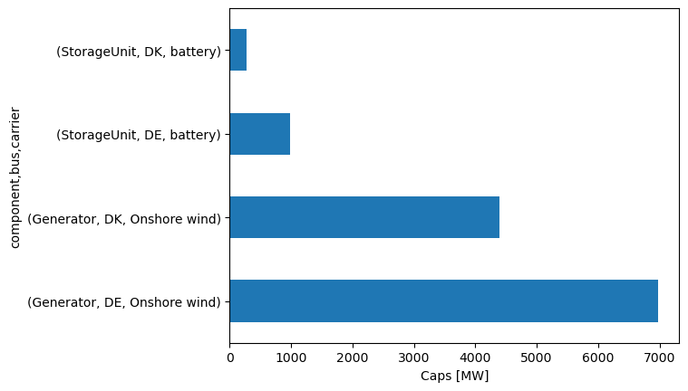
n.statistics.optimal_capacity(groupby=["bus", "carrier"])
component bus carrier
Generator DE Onshore wind 6974.65393
DK Onshore wind 4401.21892
Line DK AC 1500.00000
StorageUnit DE battery 978.62773
DK battery 272.64874
dtype: float64
n.statistics.capacity_factor(components=["Generator", "StorageUnit", "Line"], groupby=["bus", "carrier"])
component bus carrier
Generator DE Onshore wind 0.508460
DK Onshore wind 0.557497
StorageUnit DE battery 0.500000
DK battery 0.528292
Line DK AC 0.969110
dtype: float64
n.statistics.curtailment(groupby=["bus", "carrier"])
component bus carrier
Generator DK Onshore wind 3185.08535
StorageUnit DE battery 23487.06559
DK battery 6543.56965
dtype: float64
Energy flows#
n.statistics.supply()
component carrier
Generator Onshore wind 144000.00000
Line AC 34887.96337
StorageUnit battery 7600.22490
dtype: float64
n.statistics.supply(groupby=["bus"])
component bus
Generator DE 85112.03663
DK 58887.96337
Line DE 34887.96337
StorageUnit DE 5871.76640
DK 1728.45850
dtype: float64
n.statistics.withdrawal(groupby=["bus"])
component bus
Line DK 34887.96337
Load DE 120000.00000
DK 24000.00000
StorageUnit DE 5871.76640
DK 1728.45850
dtype: float64
n.statistics.energy_balance(groupby="bus", groupby_time=False)
| snapshot | 2015-01-03 00:00:00 | 2015-01-03 01:00:00 | 2015-01-03 02:00:00 | 2015-01-03 03:00:00 | 2015-01-03 04:00:00 | 2015-01-03 05:00:00 | 2015-01-03 06:00:00 | 2015-01-03 07:00:00 | 2015-01-03 08:00:00 | 2015-01-03 09:00:00 | ... | 2015-01-03 14:00:00 | 2015-01-03 15:00:00 | 2015-01-03 16:00:00 | 2015-01-03 17:00:00 | 2015-01-03 18:00:00 | 2015-01-03 19:00:00 | 2015-01-03 20:00:00 | 2015-01-03 21:00:00 | 2015-01-03 22:00:00 | 2015-01-03 23:00:00 | |
|---|---|---|---|---|---|---|---|---|---|---|---|---|---|---|---|---|---|---|---|---|---|---|
| component | bus | |||||||||||||||||||||
| Generator | DE | 3921.18531 | 3892.41486 | 3715.56554 | 3710.39034 | 3676.68184 | 3736.31513 | 3887.11413 | 4236.23043 | 4430.56521 | 4419.05703 | ... | 3351.60717 | 3137.84798 | 2994.93034 | 2910.02788 | 2521.37227 | 2692.69767 | 2885.49105 | 2997.51794 | 3098.11337 | 3190.68098 |
| DK | 2530.75299 | 2772.64874 | 2772.64874 | 2772.64874 | 2772.64874 | 2772.64874 | 2695.61895 | 2546.27679 | 2468.31360 | 2439.12031 | ... | 2384.14469 | 2373.50254 | 2376.57019 | 2350.95950 | 2227.35126 | 2271.65393 | 2217.46613 | 2208.52285 | 2204.18325 | 2216.74873 | |
| Line | DK | -1500.00000 | -1500.00000 | -1500.00000 | -1500.00000 | -1500.00000 | -1500.00000 | -1500.00000 | -1500.00000 | -1500.00000 | -1500.00000 | ... | -1500.00000 | -1500.00000 | -1500.00000 | -1500.00000 | -1500.00000 | -1328.67460 | -1490.11486 | -1335.57677 | -1476.83198 | -1216.74873 |
| DE | 1500.00000 | 1500.00000 | 1500.00000 | 1500.00000 | 1500.00000 | 1500.00000 | 1500.00000 | 1500.00000 | 1500.00000 | 1500.00000 | ... | 1500.00000 | 1500.00000 | 1500.00000 | 1500.00000 | 1500.00000 | 1328.67460 | 1490.11486 | 1335.57677 | 1476.83198 | 1216.74873 | |
| Load | DE | -5000.00000 | -5000.00000 | -5000.00000 | -5000.00000 | -5000.00000 | -5000.00000 | -5000.00000 | -5000.00000 | -5000.00000 | -5000.00000 | ... | -5000.00000 | -5000.00000 | -5000.00000 | -5000.00000 | -5000.00000 | -5000.00000 | -5000.00000 | -5000.00000 | -5000.00000 | -5000.00000 |
| DK | -1000.00000 | -1000.00000 | -1000.00000 | -1000.00000 | -1000.00000 | -1000.00000 | -1000.00000 | -1000.00000 | -1000.00000 | -1000.00000 | ... | -1000.00000 | -1000.00000 | -1000.00000 | -1000.00000 | -1000.00000 | -1000.00000 | -1000.00000 | -1000.00000 | -1000.00000 | -1000.00000 | |
| StorageUnit | DE | -421.18531 | -392.41486 | -215.56554 | -210.39034 | -176.68184 | -236.31513 | -387.11413 | -736.23043 | -930.56521 | -919.05703 | ... | 148.39283 | 362.15202 | 505.06966 | 589.97212 | 978.62773 | 978.62773 | 624.39409 | 666.90529 | 425.05464 | 592.57029 |
| DK | -30.75299 | -272.64874 | -272.64874 | -272.64874 | -272.64874 | -272.64874 | -195.61895 | -46.27679 | 31.68640 | 60.87969 | ... | 115.85531 | 126.49746 | 123.42981 | 149.04050 | 272.64874 | 57.02067 | 272.64874 | 127.05392 | 272.64874 | NaN |
8 rows × 24 columns
n.statistics.energy_balance(groupby=["bus", "carrier"], groupby_time=False)
| snapshot | 2015-01-03 00:00:00 | 2015-01-03 01:00:00 | 2015-01-03 02:00:00 | 2015-01-03 03:00:00 | 2015-01-03 04:00:00 | 2015-01-03 05:00:00 | 2015-01-03 06:00:00 | 2015-01-03 07:00:00 | 2015-01-03 08:00:00 | 2015-01-03 09:00:00 | ... | 2015-01-03 14:00:00 | 2015-01-03 15:00:00 | 2015-01-03 16:00:00 | 2015-01-03 17:00:00 | 2015-01-03 18:00:00 | 2015-01-03 19:00:00 | 2015-01-03 20:00:00 | 2015-01-03 21:00:00 | 2015-01-03 22:00:00 | 2015-01-03 23:00:00 | ||
|---|---|---|---|---|---|---|---|---|---|---|---|---|---|---|---|---|---|---|---|---|---|---|---|
| component | bus | carrier | |||||||||||||||||||||
| Generator | DE | Onshore wind | 3921.18531 | 3892.41486 | 3715.56554 | 3710.39034 | 3676.68184 | 3736.31513 | 3887.11413 | 4236.23043 | 4430.56521 | 4419.05703 | ... | 3351.60717 | 3137.84798 | 2994.93034 | 2910.02788 | 2521.37227 | 2692.69767 | 2885.49105 | 2997.51794 | 3098.11337 | 3190.68098 |
| DK | Onshore wind | 2530.75299 | 2772.64874 | 2772.64874 | 2772.64874 | 2772.64874 | 2772.64874 | 2695.61895 | 2546.27679 | 2468.31360 | 2439.12031 | ... | 2384.14469 | 2373.50254 | 2376.57019 | 2350.95950 | 2227.35126 | 2271.65393 | 2217.46613 | 2208.52285 | 2204.18325 | 2216.74873 | |
| Line | DK | AC | -1500.00000 | -1500.00000 | -1500.00000 | -1500.00000 | -1500.00000 | -1500.00000 | -1500.00000 | -1500.00000 | -1500.00000 | -1500.00000 | ... | -1500.00000 | -1500.00000 | -1500.00000 | -1500.00000 | -1500.00000 | -1328.67460 | -1490.11486 | -1335.57677 | -1476.83198 | -1216.74873 |
| DE | AC | 1500.00000 | 1500.00000 | 1500.00000 | 1500.00000 | 1500.00000 | 1500.00000 | 1500.00000 | 1500.00000 | 1500.00000 | 1500.00000 | ... | 1500.00000 | 1500.00000 | 1500.00000 | 1500.00000 | 1500.00000 | 1328.67460 | 1490.11486 | 1335.57677 | 1476.83198 | 1216.74873 | |
| Load | DE | - | -5000.00000 | -5000.00000 | -5000.00000 | -5000.00000 | -5000.00000 | -5000.00000 | -5000.00000 | -5000.00000 | -5000.00000 | -5000.00000 | ... | -5000.00000 | -5000.00000 | -5000.00000 | -5000.00000 | -5000.00000 | -5000.00000 | -5000.00000 | -5000.00000 | -5000.00000 | -5000.00000 |
| DK | - | -1000.00000 | -1000.00000 | -1000.00000 | -1000.00000 | -1000.00000 | -1000.00000 | -1000.00000 | -1000.00000 | -1000.00000 | -1000.00000 | ... | -1000.00000 | -1000.00000 | -1000.00000 | -1000.00000 | -1000.00000 | -1000.00000 | -1000.00000 | -1000.00000 | -1000.00000 | -1000.00000 | |
| StorageUnit | DE | battery | -421.18531 | -392.41486 | -215.56554 | -210.39034 | -176.68184 | -236.31513 | -387.11413 | -736.23043 | -930.56521 | -919.05703 | ... | 148.39283 | 362.15202 | 505.06966 | 589.97212 | 978.62773 | 978.62773 | 624.39409 | 666.90529 | 425.05464 | 592.57029 |
| DK | battery | -30.75299 | -272.64874 | -272.64874 | -272.64874 | -272.64874 | -272.64874 | -195.61895 | -46.27679 | 31.68640 | 60.87969 | ... | 115.85531 | 126.49746 | 123.42981 | 149.04050 | 272.64874 | 57.02067 | 272.64874 | 127.05392 | 272.64874 | NaN |
8 rows × 24 columns
n.statistics.transmission(groupby_time=False)
| snapshot | 2015-01-03 00:00:00 | 2015-01-03 01:00:00 | 2015-01-03 02:00:00 | 2015-01-03 03:00:00 | 2015-01-03 04:00:00 | 2015-01-03 05:00:00 | 2015-01-03 06:00:00 | 2015-01-03 07:00:00 | 2015-01-03 08:00:00 | 2015-01-03 09:00:00 | ... | 2015-01-03 14:00:00 | 2015-01-03 15:00:00 | 2015-01-03 16:00:00 | 2015-01-03 17:00:00 | 2015-01-03 18:00:00 | 2015-01-03 19:00:00 | 2015-01-03 20:00:00 | 2015-01-03 21:00:00 | 2015-01-03 22:00:00 | 2015-01-03 23:00:00 | |
|---|---|---|---|---|---|---|---|---|---|---|---|---|---|---|---|---|---|---|---|---|---|---|
| component | carrier | |||||||||||||||||||||
| Line | AC | 1500.0 | 1500.0 | 1500.0 | 1500.0 | 1500.0 | 1500.0 | 1500.0 | 1500.0 | 1500.0 | 1500.0 | ... | 1500.0 | 1500.0 | 1500.0 | 1500.0 | 1500.0 | 1328.6746 | 1490.11486 | 1335.57677 | 1476.83198 | 1216.74873 |
1 rows × 24 columns
n.statistics.transmission(groupby_time=False).T.plot(ylabel="Exports from DK to DE [MW]")
<Axes: xlabel='snapshot', ylabel='Exports from DK to DE [MW]'>
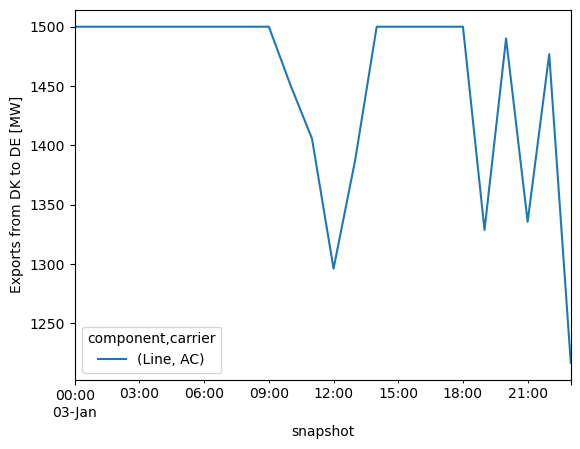
n.snapshots
DatetimeIndex(['2015-01-03 00:00:00', '2015-01-03 01:00:00',
'2015-01-03 02:00:00', '2015-01-03 03:00:00',
'2015-01-03 04:00:00', '2015-01-03 05:00:00',
'2015-01-03 06:00:00', '2015-01-03 07:00:00',
'2015-01-03 08:00:00', '2015-01-03 09:00:00',
'2015-01-03 10:00:00', '2015-01-03 11:00:00',
'2015-01-03 12:00:00', '2015-01-03 13:00:00',
'2015-01-03 14:00:00', '2015-01-03 15:00:00',
'2015-01-03 16:00:00', '2015-01-03 17:00:00',
'2015-01-03 18:00:00', '2015-01-03 19:00:00',
'2015-01-03 20:00:00', '2015-01-03 21:00:00',
'2015-01-03 22:00:00', '2015-01-03 23:00:00'],
dtype='datetime64[ns]', name='snapshot', freq=None)
fig, ax = plt.subplots()
n.storage_units_t.p["DK storage"].plot(ax=ax)
ax.hlines(0, xmin=n.snapshots[0], xmax=n.snapshots[-1], ls = "dashed", color="grey")
ax.fill_between(bat_dis.index, 300, color="red", alpha=0.5, label="Discharge")
ax.fill_between(bat_ch.index, -300, color="green", alpha=0.5, label="Charge")
ax.legend()
<matplotlib.legend.Legend at 0x317d3f610>
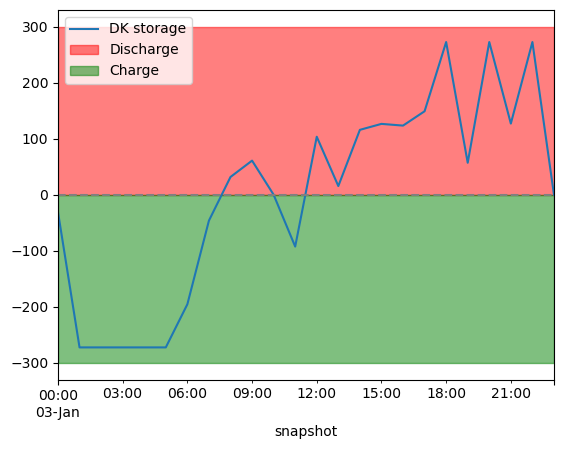
n.statistics.prices()
name
DK 7842.54255
DE 9125.27870
Name: objective, dtype: float64
# Add dispatch plot (DK) and include exports to DE.
fig, ax = plt.subplots(figsize=(10, 3))
bat_dis = n.storage_units_t.p["DK storage"].clip(lower=0) # positive: discharge
bat_ch = n.storage_units_t.p["DK storage"].clip(upper=0) # negative: charging
exports = n.lines_t.p0["DK-DE"].clip(lower=0) # positive values mean exports
imports = n.lines_t.p0["DK-DE"].clip(upper=0) # negative values mean imports
# Stack wind + OCGT + battery discharge together above 0
supply = pd.concat([
pd.DataFrame(bat_dis).rename(columns={"DK storage": "Battery discharge"}),
pd.DataFrame(n.generators_t.p["DK wind"]).rename(columns={"DK wind": "Wind"}),
], axis=1)
supply.plot.area(ax=ax, linewidth=0, stacked=True,
color=["#2ca02c", "#1f77b4", "#d62728"])
# Battery charging below 0 (separate call is fine here — it naturally starts from 0 and goes negative)
withdrawal = pd.concat([
pd.DataFrame(bat_ch).rename(columns={"DK storage": "Battery charge"}),
-pd.DataFrame(exports).rename(columns={"DK-DE": "Exports to DE"}), # exports mean withdrawal
], axis=1)
withdrawal.plot.area(ax=ax, linewidth=0, stacked=True, color=["#ff7f0e", "#d62728"])
# Demand
n.loads_t.p_set["DK load"].plot(ax=ax, color="black", linestyle="--", label="Demand")
ax.axhline(0, color="black", linewidth=0.5)
ax.set_ylabel("MW")
ax.set_ylim(-2500, 3500)
ax.legend(frameon=False, bbox_to_anchor=(1.05, 1))
plt.tight_layout()
/opt/homebrew/Caskroom/miniforge/base/envs/integrated-energy-grids/lib/python3.13/site-packages/pandas/plotting/_matplotlib/core.py:1800: UserWarning:
Attempting to set identical low and high ylims makes transformation singular; automatically expanding.
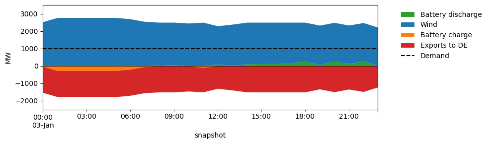
For the total system we can use a simpler area plot as well (or with some modifications we can also do the same for the upper):
n.statistics.energy_balance.plot.area()
(<Figure size 745.25x300 with 1 Axes>,
<Axes: xlabel='snapshot', ylabel='Energy Balance'>,
<seaborn.axisgrid.FacetGrid at 0x317bbfe00>)
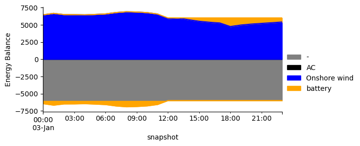
Economics#
n.statistics.system_cost().sum()
np.float64(1283971972.5246902)
n.statistics.capex()
component carrier
Generator Onshore wind 1.156289e+09
StorageUnit battery 1.276828e+08
dtype: float64
n.statistics.opex()
Series([], dtype: float64)
n.statistics.revenue()
component carrier
Generator Onshore wind 1.156289e+09
Line AC 4.713123e+07
Load - -1.331103e+09
StorageUnit battery 1.276828e+08
dtype: float64
Marginal prices#
fig, ax = plt.subplots(figsize=(12, 3))
n.statistics.prices(groupby_time=False).T.plot(ax=ax)
ax.set_ylabel('EUR/MWh')
ax.set_title('Locational marginal prices')
ax.legend(frameon=False)
plt.tight_layout()
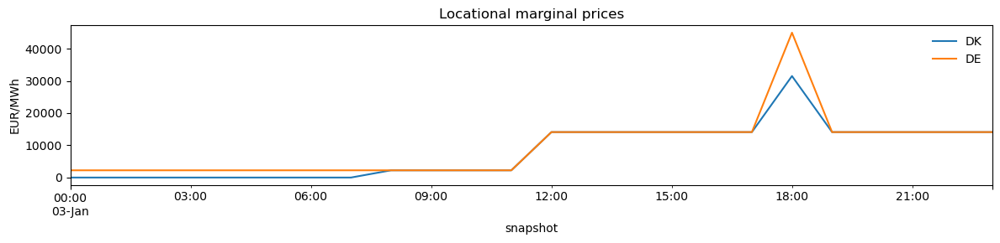
n.buses_t.marginal_price
| name | DK | DE |
|---|---|---|
| snapshot | ||
| 2015-01-03 00:00:00 | 0.000000 | 2244.344241 |
| 2015-01-03 01:00:00 | 0.000000 | 2244.344241 |
| 2015-01-03 02:00:00 | 0.000000 | 2244.344241 |
| 2015-01-03 03:00:00 | 0.000000 | 2244.344241 |
| 2015-01-03 04:00:00 | 0.000000 | 2244.344241 |
| 2015-01-03 05:00:00 | 0.000000 | 2244.344241 |
| 2015-01-03 06:00:00 | 0.000000 | 2244.344241 |
| 2015-01-03 07:00:00 | 0.000000 | 2244.344241 |
| 2015-01-03 08:00:00 | 2244.344241 | 2244.344241 |
| 2015-01-03 09:00:00 | 2244.344241 | 2244.344241 |
| 2015-01-03 10:00:00 | 2244.344241 | 2244.344241 |
| 2015-01-03 11:00:00 | 2244.344241 | 2244.344241 |
| 2015-01-03 12:00:00 | 14107.856748 | 14107.856748 |
| 2015-01-03 13:00:00 | 14107.856748 | 14107.856748 |
| 2015-01-03 14:00:00 | 14107.856748 | 14107.856748 |
| 2015-01-03 15:00:00 | 14107.856748 | 14107.856748 |
| 2015-01-03 16:00:00 | 14107.856748 | 14107.856748 |
| 2015-01-03 17:00:00 | 14107.856748 | 14107.856748 |
| 2015-01-03 18:00:00 | 31502.716261 | 44968.781708 |
| 2015-01-03 19:00:00 | 14107.856748 | 14107.856748 |
| 2015-01-03 20:00:00 | 14107.856748 | 14107.856748 |
| 2015-01-03 21:00:00 | 14107.856748 | 14107.856748 |
| 2015-01-03 22:00:00 | 14107.856748 | 14107.856748 |
| 2015-01-03 23:00:00 | 14107.856748 | 14107.856748 |
Further reading#
Statistics API:
n.statistics.capex(),n.statistics.market_value(),n.statistics.curtailment()Large-scale studies: PyPSA-Eur